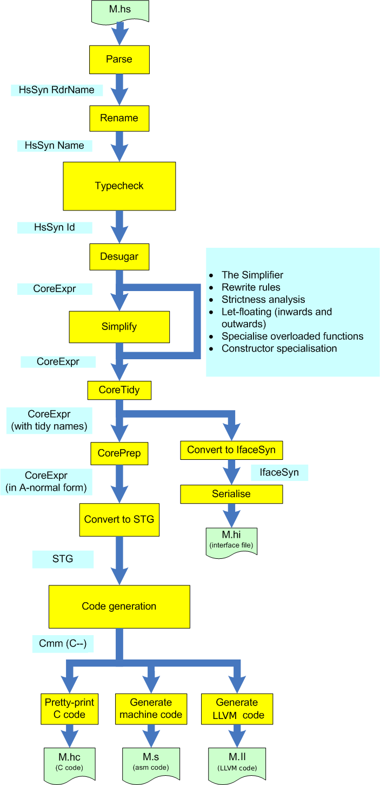
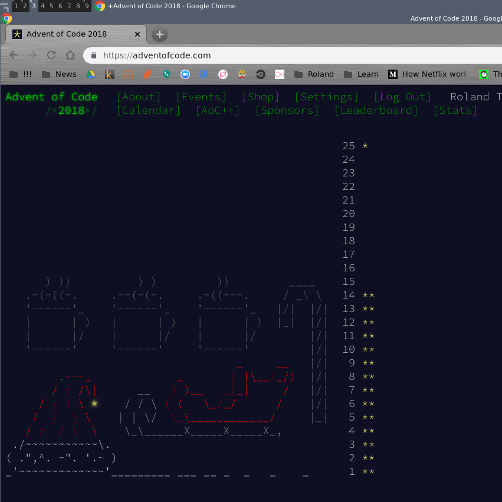

eta
Functional Programming on the JVM
Created by roland@tritsch.org / @innolocity
For the Dublin Scala Meetup / Febrary 2019
Who, what, why, ...
- FP & SaaS & Agile SW Dev ... Enthusiast :)
- Building functional teams and functional systems :)
- Ex-IONA, Ex-Gilt, Ex-Nitro, ..., Soon-??? :)
- Contributor to eta-benchmarks
TTTA :)
- What is it? How does it work?
- What works? What does not work?
- How does it fit into the language landscape?
- Writing (some) code!!!
What is it?
- A Google Summer of Code (GSOC) project
- A forked/customized frontend (minimal)
- A native backend (massive)
What is it?
What is it?
- An Opensource Project
- A Company - Typelead
- A Community - Github, Groups, Chat, ...
How does it work?
- etlas, gradle, sbt, ...
- java interop, FFI, ...
- hackage, patches, ...
What works/does not work?
- + Lots of haskell packages
- o Some Java packages
- - Misc (Performance, Recursion, Types(Int, ...), ...)
Alternatives ...
The language landscape ...
- FP on the JVM
- Haskell on the JVM
- ???
Some demos ...
- Advent of Code
- Spark jobs written in Haskell :)
- Using the FFI tool!!!
Some demos ... - AOC
Some demos ... - Spark

Summary & Take-aways
- FP on the JVM - Scala is the better option
- Haskell on the JVM (using Haskell packages) - Something to consider
- ???